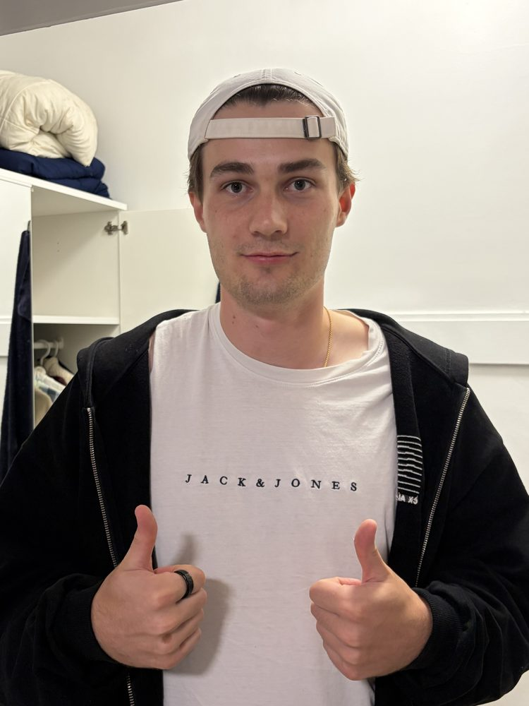
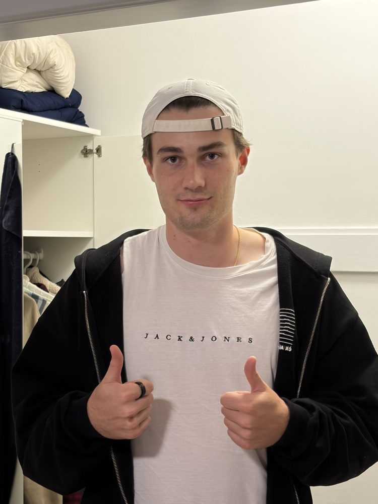
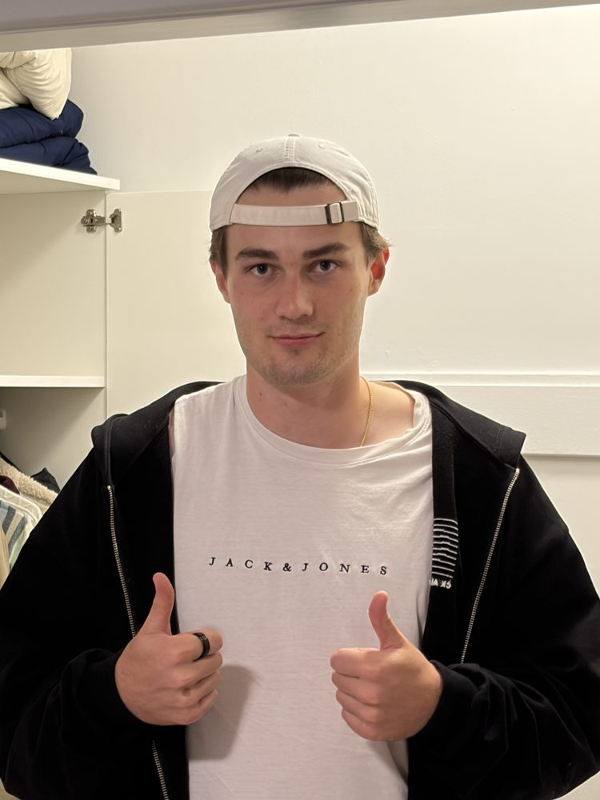
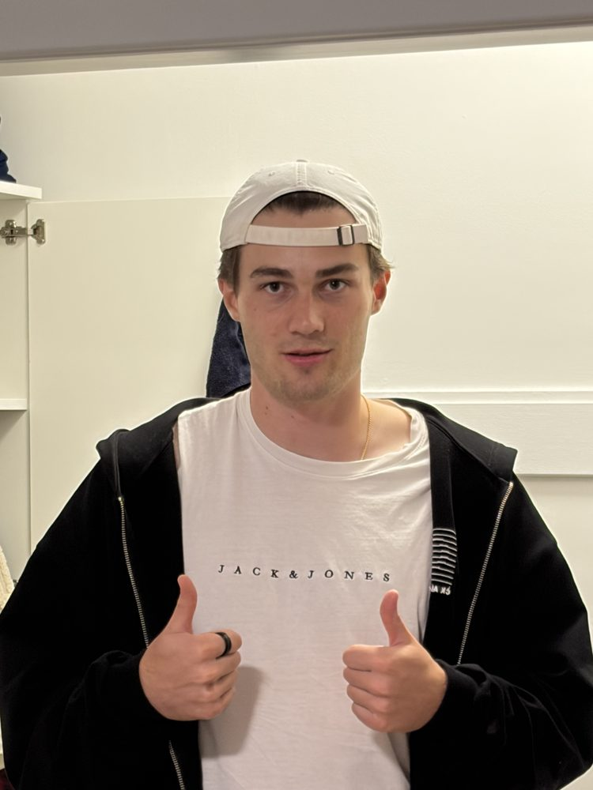
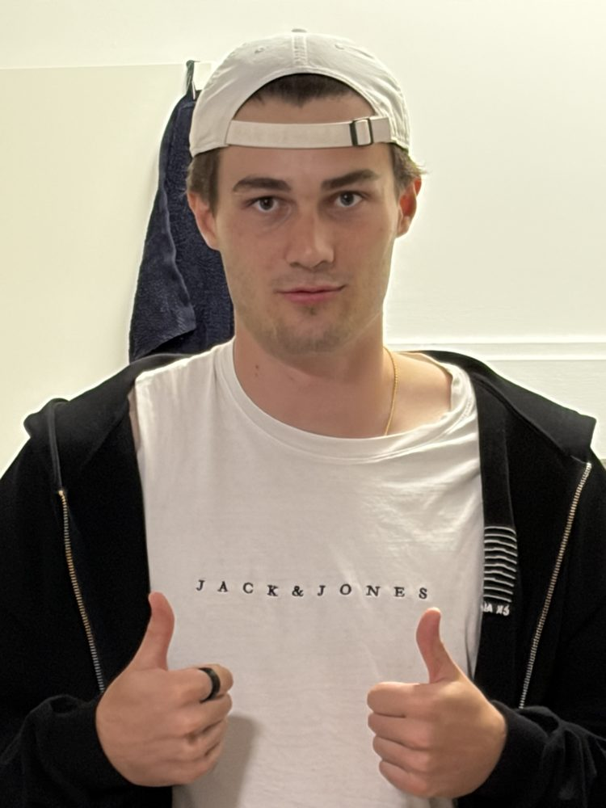
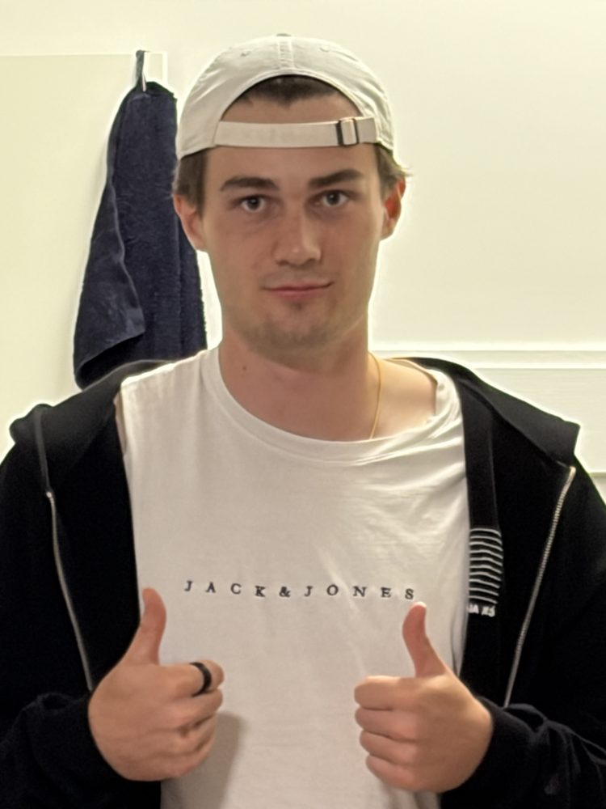

Arno Demarteau
Computer Vision & Computational Photography at UC Berkeley.
Project 0
Becoming Friends
with Your Camera
Perspective comes from where you stand, not from how much you zoom. Zooming only changes how much of the picture you keep.
01
Selfie, close vs. far


Both photos have my face at about the same size, but the close one looks wrong. My nose is much bigger and my ears almost disappear. That happens because up close my nose is way nearer to the camera than my ears are, so it gets projected larger. When I back up, everything on my face is roughly the same distance away, so the proportions look normal again.
02
Building, near vs. far


Same idea in reverse. From far away the arches stack up on each other and the whole building looks flat, almost like a poster. When I walk up close, the near arch towers over the far one and you can actually feel how deep the hallway is.
03
Dolly zoom







I took six photos while walking backwards and zooming in, keeping my head the same size in every frame. The size stays locked, but the shape does not. In the first frame the camera is close to me so my nose comes forward, and by the last frame I am far enough back that my face goes almost flat. It is the same thing as part 01, just spread out into an animation.